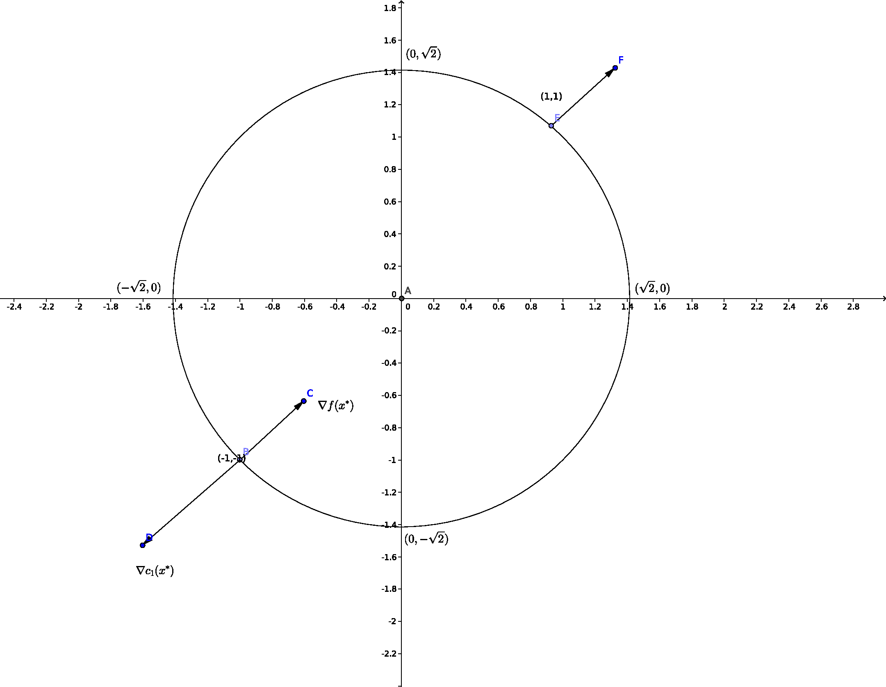
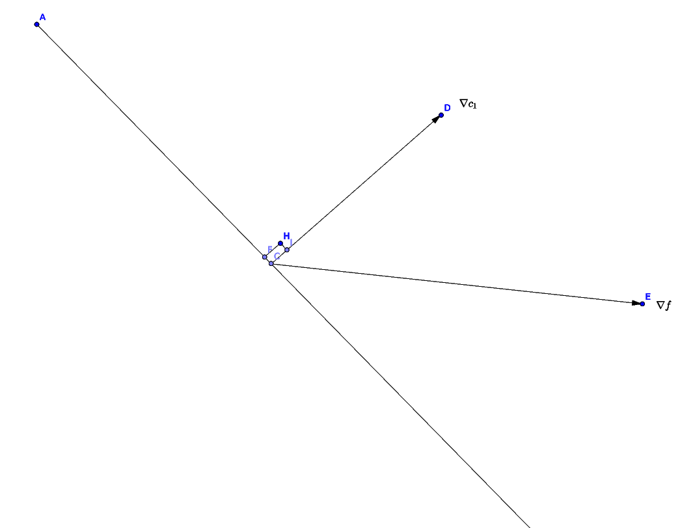

Constrained Optimization
Introduction
The general formulation of the constrained optimization problem is:
\begin{align*}
&& \min_{\bx \in \mathbb{R}^n} f(\bx)\\ \\
\text{subject to } && c_{i}(\bx) = 0 && i \in \mathcal{E} &&& \text{equality constraint}\\
&& c_{i}(\bx) \geq 0 && i \in \mathcal{I} &&& \text{inequality constraint}
\end{align*}
Where \(f\) and the functions \(c_i\) are all smooth, real valued functions on a subset of \(\mathbb{R}^n\). \(f\) is the objective function which is to be minimized with respect to the decision variables \(\bx\). Feasible set is the set of points (\(\bx\)'s) which satisfy all constraints and so they are candidates for the solution. The feasible set (\(\Omega\)) is mathematically defined as:
\begin{align*}
\Omega = \{\bx \text{ } | \text{ }c_{i}(\bx) = 0, \; i\in \mathcal{E} ;\; c_{i}(\bx) \geq 0 , \; i \in
\mathcal{I}\}
\end{align*}
So we can write the objective function in short:
\begin{align}
&& \min_{\bx \in \Omega} f(\bx)
\end{align}
Here we only talk about minimizing the objective function, but all explanation given further would work perfectly even if we talk about maximizing the objective function. An example for constraint for a 2D constrained optimization problem is given by:
\begin{align*}
c_{1}(\bx) = -x_{1}^{2} - x_{2}^{2} +c^{2} , \;\; c_{1}(\bx) \geq 0
\end{align*}
The feasible set \(\Omega\) for this single constraint contains all the points inside the circle of radius \(c\) including the perimeter. For multiple constraints, the feasible set will include points that satisfy all constraints i.e. lie in the common region defined by the constraints.
Types of Solutions
The most natural thing to do now is to find the solution/s (maxima or minima), but there are different kinds of solutions possible. Types of solutions are:
- Local Solution: A vector \(\bx^* \in \Omega\) is called a local solution (local maxima or local minima) if the objective function value at \(\bx^*\) is lesser than any other feasible point in its neighbourhood. i.e. \( f(\bx^*) \le f(\bx)\) for \(\bx \in \mathcal{N} \cap \Omega\)
- Strict Local Solution: A vector \(\bx^* \in \Omega\) is called a strict local solution if, for \(\bx \in \mathcal{N} \cap \Omega\), \(f(\bx^*) < f(\bx)\), which means that the solution vector must provide the smallest function value in its neighbourhood while still being a feasible point. The strict part is that equal sign is not acceptable here.
- Isolated Local Solution: A vector \(\bx^* \in \Omega\) is called a isolated local solution if \(\bx^* \in \Omega\) and there is a neighbourhood \(\mathcal{N}\) of \(\bx^*\) such that \(\bx^*\) is the only local solution in \(\mathcal{N} \cap \Omega\). Note that isolated solutions are strict but the reverse is not true.
- Global Solution: A vector \(\bx^* \in \Omega\) is called a global solution (global maxima or local minima) if the objective function value at \(\bx^*\) is lesser than any other feasible point in the entire feasible set. i.e. \( f(\bx^*) \le f(\bx)\) for \(\bx \in \Omega\)
For a convex objective function, where the function and the constraints are smooth, we can prove that the global solution is the same as the local solution. Because there is only a single extreme point.
Characteristics of the Solution
Now, in the Unconstrained Optimization, we found certain conditions that guarantee the existence of a solution. And we can determine the properties of the objective function and its first and second gradient, which give us lot of information about the optimal points. Recall the Optimality conditions for the Unconstrained Optimization case:
- Necessary Conditions: Local unconstrained minimizers have \(\nabla f(\bx^*) = \bze\) and \(\nabla^2 f(\bx^*) \ge \bze\) i.e. Hessian of \(f\) is positive semi-definite.
- Sufficient Conditions: Any point \(\bx^*\) at which \(\nabla f(\bx^*) = \bze\) and \(\nabla^2 f(\bx^*) \gt \bze\) i.e. Hessian of \(f\) is positive definite, is a strong local minimizer of \(f\).
First order conditions refer to gradient equation, and the Second order conditions refer to the Hessian equation. Similar conditions must be derived for Constrained Optimization case as well. We will do this with 2 examples, to get a geometric viewpoint, and then state the conditions mathematically.
Definition of the Active Set \(\mathcal{A}(\bx)\)
The active set \(\mathcal{A}(\bx)\) at any feasible \(\bx\) consists of the equality constraint indices from \(\mathcal{E}\) together with the indices of the inequality constraints \(i\) for which \(c_i(\bx) = 0\).
\begin{align*}
A(\bx)=\mathcal{E} \cup \{ i \in \mathcal{I} \hspace{0.2cm} | \hspace{0.2cm} c_{i}(\bx)=0\}
\end{align*}
At the feasible point \(\bx\), the inequality constraint \(i \in \mathcal{I}\) is said to be active if \(c_i(\bx) = 0\) and inactive if the strict inequality \(c_i(\bx) \gt 0\) is satisfied.
Example 1: Single Equality Constraint
\begin{align*}
\min_{\bx \in \mathbb{R}^2} &&& x_{1} + x_{2}\\ \\
\text{subject to} &&& x_{1}^{2} + x_{2}^{2} - 2 = 0 &&\\ \\
f(\bx) = x_{1} + x_{2} && \mathcal{I} = \phi \text{ , } \mathcal{E} = \{ 1 \}
\end{align*}

At the solution :
\begin{align*}
\nabla f \hspace{0.2cm} || \hspace{0.2cm} \nabla c_{1}
\end{align*}
\begin{align*}
\nabla f(\bx^{*}) = \lambda_{1}^{*} \nabla c_{1}(\bx^{*})
\end{align*}
Is that always True?
\begin{align*}
\bx \in \Omega \text{ , } c_{1}(\bx) = 0
\end{align*}
We take a small step \(\bs\)
\begin{align*}
c_{1}(\bx+\bs) = 0
\end{align*}
Taylor Series approximation:
\begin{align*}
&c_{1}(\bx) + \nabla c_{1}(\bx)^{T} \bs = 0\\
&\text{Since } c_{1}(\bx) = 0 \\
&\nabla c_{1}(\bx)^{T} = 0
\end{align*}
We want decrease in f
\begin{align*}
f(\bx+\bs) &< f(\bx)\\
f(\bx) + \nabla f(\bx)^{T} \bs &< f(\bx)
\end{align*}
First Order Conditions:
\begin{align*}
&\nabla f(\bx)^{T} < 0\\
&\nabla c_{1}(\bx)^{T} < 0 \;\; \& \;\; \nabla f(\bx)^{T} < 0
\end{align*}
If no \(\bs\) exist that satisfy the above 2 conditions, then \(\bx\) is \(\bx^{*}\)

\begin{align*}
\nabla c_{1} || \nabla f \text{ , } \nabla f(\bx^*) = \lambda_{1} \nabla c_{1}(\bx^*)
\end{align*}
Lagrangian Function:
\begin{align*}
\mathcal{L}(\bx,\lambda_{1}) = f(\bx) - \lambda_{1} \nabla c_{1}(\bx)\\
\nabla \mathcal{L} = \nabla f - \lambda_{1} \nabla c_{1} = 0
\end{align*}
At the solution \(\bx^{*}\), there is a scalar \(\lambda_{1}^{*}\) such that:
\begin{align*}
\nabla_{\bx} \mathcal{L}(\bx^{*},\lambda^{*}) = 0
\end{align*}
Example 2: Single Inequality Constraint
\begin{align*}
\min_{\bx \in \mathbb{R}^2} &&& x_{1} + x_{2} &&&\\ \\
\text{subject to } &&& 2 - x_{1}^{2} - x_{2}^{2} \geq 0 &&&
\end{align*}
\(\bs\) decrease:
\begin{align*}
\nabla f(\bx)^{T} \bs < 0 \text{ , } \nabla c^{T}\bs = 0
\end{align*}
\(\bs\) feasibility:
\begin{align*}
c_{1}(\bx+\bs) \hspace{1.5cm} &\geq 0\\
c_{1}(\bx) + \nabla c_{1}^{T}(\bx) \bs \hspace{0.2cm} &\geq 0
\end{align*}
Case: 1
x is completely inside the feasible region If \nabla f(x) \neq 0, we can set:
\begin{align*}
\textit{S} = -\alpha \nabla f(\bx)
\end{align*}
"Steepest Descent Direction"
Case: 2
\begin{align*}
c_{1}(\bx) + \nabla c_{1}(\bx)^{T} \bs &\geq 0 \text{ , } c_{1}(\bx) = 0\\
\nabla c_{1}(\bx)^{T} &\geq 0\\
\nabla f(\bx)^{T} \bs &< 0
\end{align*}
\begin{align*}
\nabla f || \nabla c_{1} \text{ , } \nabla f = \lambda_{1} \nabla c_{1} \text{ , } \lambda_{1} \geq 0
\end{align*}
\begin{align*}
\lambda_{1} c_{1}(\bx) = 0
\end{align*}
If \(c_{1}(\bx) = 0 \) then \(\lambda_{1} > 0\)
If \(c_{1}(\bx) \neq 0\) then \(\lambda_{1} = 0\)
Case: 1
\begin{align*}
\min_{\bx \in \mathbb{R}^m} f(\bx) - \lambda_{1} c_{1}(\bx)\\
\lambda_{1} > 0\\ \\
\text{minimizer} \mathcal{L}(x,\lambda_{1})\\ \lambda_{1}^{*} \geq 0\\
\lambda_{1}^{*}c_{1}(\bx^{*}) = 0
\end{align*}
- Equality
- Inequality
\begin{align*}
\mathcal{L} = f - \lambda_{1}c_{1} - \lambda_{2}c_{2}
\end{align*}
\(\nabla \mathcal{L} = 0\), for some \(\lambda^{*} \geq 0\)
\begin{align*}
\lambda_{1}^{*} \geq 0 \\
\lambda_{2}^{*} \geq 0
\end{align*}
Complimentary conditions:
\begin{align*}
\lambda_{1}^{*} c_{1}^{*} = 0\\
\lambda_{2}^{*} c_{2}^{*} = 0
\end{align*}
First Order Optimality condition of the KKT Conditions.
Suppose \(\bx^{*}\) is a local solution \(\&\) f, \(c_{i}\) are smooth \(\&\) Constraints should satisfy same
"qualification", then there is a Lagrange multiplier vector \(\lambda^{*}\) , with component \(\lambda_{i}^{*}\),
\(i \in \mathcal{E} \cup \mathcal{I}\) such that the following conditions are satisfied.
\begin{align*}
\nabla_{x} \mathcal{L}(x^{*},\lambda^{*}) = 0
\end{align*}
\begin{align*}
c_{i}(x) = 0 &&&\forall \text{ } i\in \mathcal{E}\\
c_{i}(x) \geq 0 &&&\forall \text{ } i\in \mathcal{I}\\
\lambda_{i}^{*} \geq 0 &&&\forall \text{ } i\in \mathcal{I}\\
\lambda_{i}^{*} c_{i}(x^{*}) = 0 &&&\forall \text{ } i\in \mathcal{E} \cup \mathcal{I}
\end{align*}
Linear Programming
Introduction
The term "program" was used for military plans, schedules of training, and deployment of combat units. This is
far before the term was used in the computer science for referring to a set of instructions. The reason is that
Linear Program was first used to replace a set of practical planning problem in the military.
Linear programming is a technique for the optimization of a linear objective function, subject to linear
equality and linear inequality constraints. The problem definition is as follows
\begin{align*}
&& \min_{\bx \in \mathbb{R}^n} f(\bx)\\ \\
\text{subject to } && c_{i}(\bx) = 0 && i \in \mathcal{E} &&& \text{equality constraint}\\
&& c_{i}(\bx) \geq 0 && i \in \mathcal{I} &&& \text{inequality constraint}
\end{align*}
Here \(f(\bx)\) and the constraints \(c_i(\bx)\) must be linear in \(\bx\).
If we have a problem formulated this way, then we may use standard constrained optimization solvers to get the
optimal solution. I would like to explain mathematically and intuitively, the methodology of the famous
algorithm called the Revised Simplex Method.
The reason Simplex Method is interesting, is that it becomes better
than the Brute force solutions, as the problem grows bigger.
Example of Linear Program
Introduction
- Linear programming is a technique for the optimization of a linear objective function, subject to linear
equality and linear inequality constraints.
- Its feasible region is a convex polytope (a geometric object with flat sides), which is a set defined as
the intersection of finitely many half spaces (one of the two regions that arise from dividing a Euclidean
n-dimensional space in two parts), each of which is defined by a linear inequality.
- Its objective function is a real-valued linear function defined on this polyhedron.
- A linear programming algorithm finds a point in the polytope where this function has the smallest (or
largest) value if such a point exists.
Geometry of the Feasible Set
Difference between Polyhedra and polytope.
The feasible set is a polytope, a convex, connected
set with flat, polygonal faces.
Look at Linear Programming from NPTEL: Shirish Shivade.
Todo: Examples of Feasible regions.
Todo: Definition of a corner point (extreme point).
Standard Form
The Simplex Method requires that the problem is reduced to the following standard form before we apply the
algorithm.
\begin{align*}
\text{min } & \bc^T \bx\\
\text{subject to } & \bA \bx = \bb \text{ , } \bx \geq \bze
\end{align*}
where \(\bc \in \mathbb{R}^n\), \(\bx \in \mathbb{R}^n\), \(\bb \in \mathbb{R}^m\) and \(\bA \in \mathbb{R}^{m
\times n}\).
We will be able to convert any kind of Linear Program to this form.
Here rows of \(\bA\) has the co-efficients of respective variables the constraints, and the \(\bb\) has the
right
hand side constant. So we have \(m\) constraints and \(n\) variables. Notice that the standard form only works
with equality constraints, so slack variables are used to be able to solve problems with inequality
constraints.
Optimality Conditions
KKT conditions here with LICQ. LICQ not done.
The Lagrangian function for the problem is given by:
\begin{align*}
\mathcal{L}(\bx, \lambda, \bs) = \bc^T \bx - \lambda^T (\bA \bx - \bb) - \bs^T \bx
\end{align*}
Here \(\lambda \in \mathbb{R}^m\) is the multiplier for the equality constraints and \(\bs \in \mathbb{R}^n\)
is
the
multiplier for the bounded constraints.
First order necessary conditions from theory of constrained optimization are wriiten as follows:
\begin{align*}
\bA^T\lambda + \bs = \bc\\
\bA \bx = \bb\\
\bx \geq \bze\\
\bs \geq \bze\\
x_i s_i = 0 \text{ , i = } 1, 2, ..., n
\end{align*}
Dual Problem
Since the standard form deals only with the minimization problem, we must have a method to convert a
maximization problem to the standard form. This is done by solving the dual problem.
The primal and the dual, both have the same solution.
Revised Simplex Method
Why does the solution lie on the extreme points?
How to go from one corner point to the other. Which is the direction of decrease of objective function.
Linear Algebra in Simplex Method
Others
- Starting the Simplex Method
- Degenerate solutions and cycling
Most material presented here is from our course reference text, "Numerical Optimization"
Dantzig's paper on Linear Programming